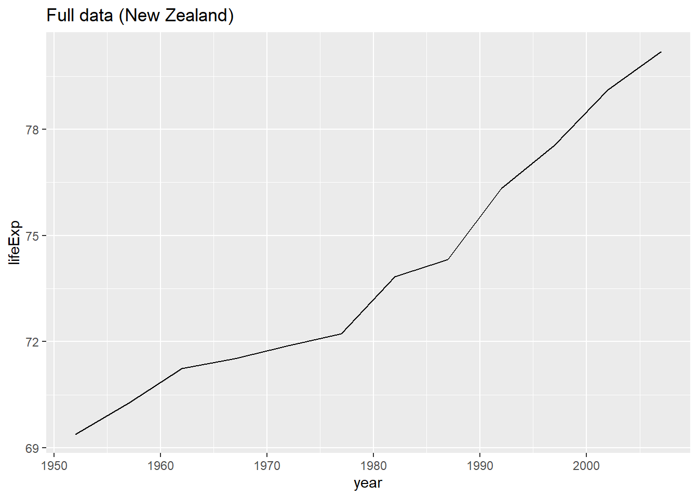
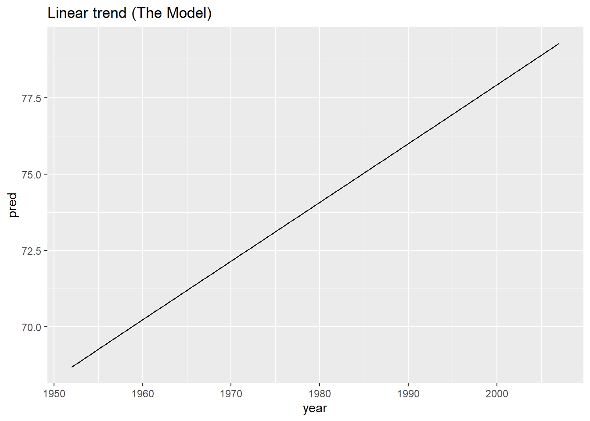
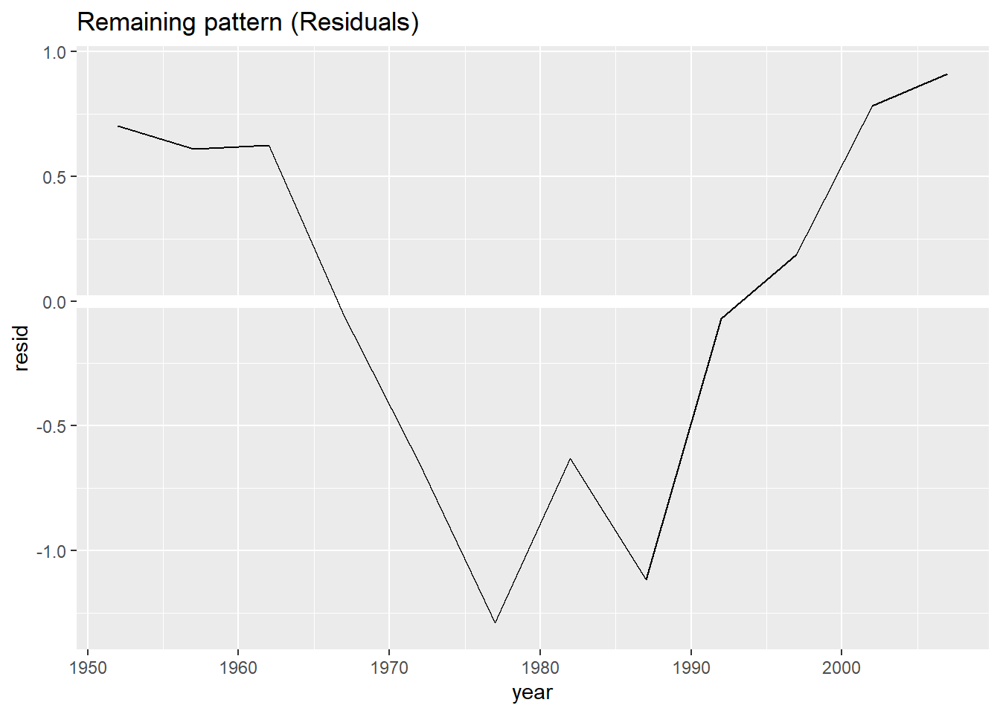
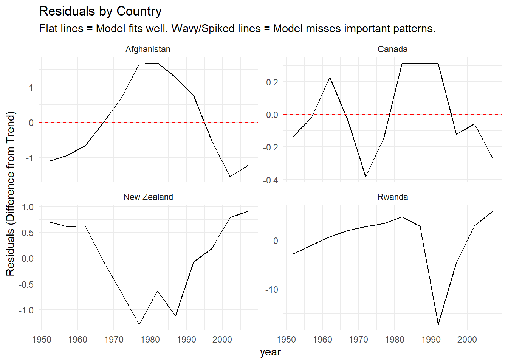

library(gapminder)
library(tidyverse) # Includes ggplot2, dplyr, tidyr, etc.
library(modelr) # Required for add_predictions and add_residuals
library(broom) # Helps clean up model outputsGapminder data visualization example
Gapminder Example
This example is from R for Data Science page 399. It is a good example of the power of visualizations prior to modeling.
In this case study, we’re going to focus on just three variables to answer the question “How does life expectancy (lifeExp) change over time (year) for each country (country)?” A good place to start is with a plot:
Note
Why visualize first? Before running 100+ regressions for every country, we look at the “Spaghetti Plot” below. It shows us that while most countries are improving (going up), the paths are messy. Our goal is to separate the Linear Trend (simple progress) from the Residuals (complex events like wars, famines, or rapid industrialization).
gapminder %>%
ggplot(aes(year, lifeExp, group = country)) +
geom_line(alpha = 1/3)
Zooming in on One Country
To understand the model, let’s look at just one country first: New Zealand.
nz <- gapminder %>%
filter(country == "New Zealand")
# Plot the raw data
nz %>%
ggplot(aes(year, lifeExp)) +
geom_line() +
ggtitle("Full data (New Zealand)")
Fitting the Model
We fit a linear model (lm) where Life Expectancy is predicted by Year. \[ \text{lifeExp} = \beta_0 + \beta_1 \cdot \text{year} + \epsilon \]
Variables:
- Dependent Variable (\(Y\)): Life Expectancy (
lifeExp) - The outcome we are trying to predict. - Independent Variable (\(X\)): Year (
year) - The predictor we are using to explain the change.
Interpretation:
- Intercept (\(\beta_0\)): The predicted life expectancy when
year = 0. Since year 0 is thousands of years ago, this number is just a mathematical anchor for the line and doesn’t have a practical biological meaning in this context. - Slope (\(\beta_1\)): The yearly rate of improvement. It tells us how much life expectancy increases (or decreases) on average for every single year that passes.
- Example: If the slope is \(0.5\), people live about 6 months longer for every calendar year that passes.
nz_mod <- lm(lifeExp ~ year, data = nz)
summary(nz_mod)
Call:
lm(formula = lifeExp ~ year, data = nz)
Residuals:
Min 1Q Median 3Q Max
-1.28745 -0.63700 0.06345 0.64442 0.91192
Coefficients:
Estimate Std. Error t value Pr(>|t|)
(Intercept) -307.69963 26.63039 -11.55 4.17e-07 ***
year 0.19282 0.01345 14.33 5.41e-08 ***
---
Signif. codes: 0 '***' 0.001 '**' 0.01 '*' 0.05 '.' 0.1 ' ' 1
Residual standard error: 0.8043 on 10 degrees of freedom
Multiple R-squared: 0.9536, Adjusted R-squared: 0.9489
F-statistic: 205.4 on 1 and 10 DF, p-value: 5.407e-081. Visualizing the Prediction (The Trend)
add_predictions adds the fitted line. This tells us: If New Zealand followed a perfectly straight path, where would it be?
Note
The fitted line is also called a marginal effects plot, and we just saw an example of how to create this using JASP
nz %>%
add_predictions(nz_mod) %>%
ggplot(aes(year, pred)) +
geom_line() +
ggtitle("Linear trend (The Model)")
2. Visualizing the Residuals (The “Noise”)
Think of the linear model as a “prediction machine” that only knows how to draw straight lines. add_residuals calculates the mistake the machine made for every single year.
The Formula: \(\text{Residual} = \text{Reality} - \text{Prediction}\)
- Residual = 0: The model was perfect. Since \(\text{Residual} = \text{Reality} - \text{Prediction}\), a zero means \(\text{Reality} = \text{Prediction}\) (e.g., \(75 - 75 = 0\)).
- Positive Residual: Reality was better than predicted.
- Negative Residual: Reality was worse than predicted (e.g., war, famine, economic crash).
By looking only at the residuals, we remove the easy-to-predict trend (the slope) and focus purely on the unexpected events. Deviations from the flat zero line show us where “history happened.”
nz %>%
add_residuals(nz_mod) %>%
ggplot(aes(year, resid)) +
geom_hline(yintercept = 0, color = "white", linewidth = 3) +
geom_line() +
ggtitle("Remaining pattern (Residuals)")
Scaling Up: Analysis for Every Country
The key question is “How can we easily fit that model to every country?”
To do this, we use the nest() function.
Understanding nest() and the List-Column
Usually, a dataframe is a rectangle of numbers and strings. But in the “tidyverse”, a dataframe can hold anything—even other dataframes.
by_country <- gapminder %>%
group_by(country, continent) %>%
nest()
by_country# A tibble: 142 × 3
# Groups: country, continent [142]
country continent data
<fct> <fct> <list>
1 Afghanistan Asia <tibble [12 × 4]>
2 Albania Europe <tibble [12 × 4]>
3 Algeria Africa <tibble [12 × 4]>
4 Angola Africa <tibble [12 × 4]>
5 Argentina Americas <tibble [12 × 4]>
6 Australia Oceania <tibble [12 × 4]>
7 Austria Europe <tibble [12 × 4]>
8 Bahrain Asia <tibble [12 × 4]>
9 Bangladesh Asia <tibble [12 × 4]>
10 Belgium Europe <tibble [12 × 4]>
# ℹ 132 more rowsWhat just happened? We squished the data. Instead of 1,704 rows (12 years x 142 countries), we now have exactly 142 rows—one per country. The data column is special: it is a List Column. Each cell in that column contains the entire 12-year dataset for that specific country.
Inspecting the List Column
We can inspect the data for the first country in our list (Afghanistan) by accessing the first element of the data column: by_country$data[[1]].
# Look at the dataframe for the first country
by_country$data[[1]]# A tibble: 12 × 4
year lifeExp pop gdpPercap
<int> <dbl> <int> <dbl>
1 1952 28.8 8425333 779.
2 1957 30.3 9240934 821.
3 1962 32.0 10267083 853.
4 1967 34.0 11537966 836.
5 1972 36.1 13079460 740.
6 1977 38.4 14880372 786.
7 1982 39.9 12881816 978.
8 1987 40.8 13867957 852.
9 1992 41.7 16317921 649.
10 1997 41.8 22227415 635.
11 2002 42.1 25268405 727.
12 2007 43.8 31889923 975.There are exactly 142 countries in our dataset. We can confirm this by checking the number of rows or the length of the list column.
nrow(by_country)[1] 142Why does index 143 fail? If we try to access by_country$data[[143]], we will get an error (Subscription out of bounds) because the list only has 142 “drawers” (slots). There is no 143rd country in this specific dataset.
# This will error because there are only 142 countries
by_country$data[[143]]Error in by_country$data[[143]]: subscript out of boundsFitting Models to All Countries
Now we create a function to fit our linear model, and we map it to every country’s data at once.
# Define the modeling function
country_model <- function(df) {
lm(lifeExp ~ year, data = df)
}
# Apply (map) the model to every single row
by_country <- by_country %>%
mutate(model = map(data, country_model))
head(by_country)# A tibble: 6 × 4
# Groups: country, continent [6]
country continent data model
<fct> <fct> <list> <list>
1 Afghanistan Asia <tibble [12 × 4]> <lm>
2 Albania Europe <tibble [12 × 4]> <lm>
3 Algeria Africa <tibble [12 × 4]> <lm>
4 Angola Africa <tibble [12 × 4]> <lm>
5 Argentina Americas <tibble [12 × 4]> <lm>
6 Australia Oceania <tibble [12 × 4]> <lm> Now we have a model column where each cell holds a full fitted linear regression model!
Visualizing Results for Specific Countries
We can now calculate residuals for everyone and unnest the data so we can plot it.
# Add residuals to each country's data
by_country <- by_country %>%
mutate(
resids = map2(data, model, add_residuals)
)
# Unnest expands the list-columns back into a regular big dataframe
resids <- unnest(by_country, resids)
resids# A tibble: 1,704 × 9
# Groups: country, continent [142]
country continent data model year lifeExp pop gdpPercap resid
<fct> <fct> <list> <list> <int> <dbl> <int> <dbl> <dbl>
1 Afghanistan Asia <tibble> <lm> 1952 28.8 8.43e6 779. -1.11
2 Afghanistan Asia <tibble> <lm> 1957 30.3 9.24e6 821. -0.952
3 Afghanistan Asia <tibble> <lm> 1962 32.0 1.03e7 853. -0.664
4 Afghanistan Asia <tibble> <lm> 1967 34.0 1.15e7 836. -0.0172
5 Afghanistan Asia <tibble> <lm> 1972 36.1 1.31e7 740. 0.674
6 Afghanistan Asia <tibble> <lm> 1977 38.4 1.49e7 786. 1.65
7 Afghanistan Asia <tibble> <lm> 1982 39.9 1.29e7 978. 1.69
8 Afghanistan Asia <tibble> <lm> 1987 40.8 1.39e7 852. 1.28
9 Afghanistan Asia <tibble> <lm> 1992 41.7 1.63e7 649. 0.754
10 Afghanistan Asia <tibble> <lm> 1997 41.8 2.22e7 635. -0.534
# ℹ 1,694 more rowsPlotting 4 Selected Countries
Let’s see how the model fits differently for a few diverse examples: New Zealand, Canada, Afghanistan, and Rwanda.
# Select specific countries
resids %>%
filter(country %in% c("New Zealand", "Canada", "Afghanistan", "Rwanda")) %>%
ggplot(aes(year, resid)) +
geom_line() +
geom_hline(yintercept = 0, linetype = "dashed", color = "red") +
facet_wrap(~country, scales = "free_y") +
theme_minimal() +
labs(title = "Residuals by Country",
subtitle = "Flat lines = Model fits well. Wavy/Spiked lines = Model misses important patterns.",
y = "Residuals (Difference from Trend)")
- Canada & NZ: The residuals are small and wavy, meaning the linear trend captures most of the reality.
- Afghanistan: Huge deviations, suggesting a linear line fails to capture the complexity of the war years.
- Rwanda: A massive spike downward in the 1990s (the genocide) which a linear model cannot predict.